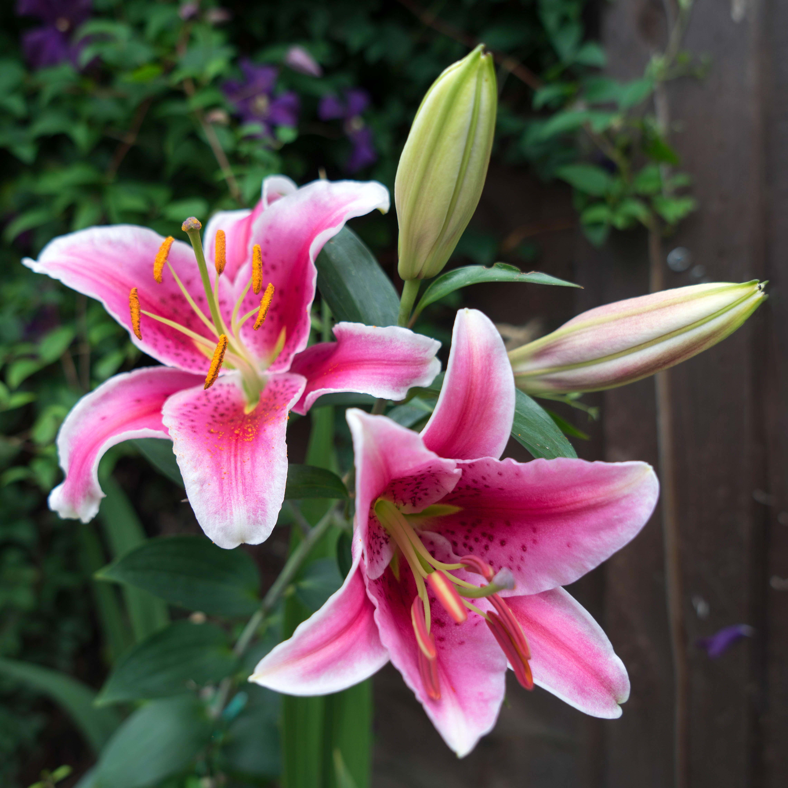
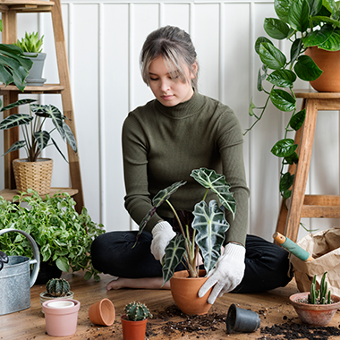

WELCOME!
Hi and Welcome to
Siembra where you can learn more about flowers, their origins, what they symbolize, and what the color of their petals means. Here we teach you to make natural fertilizers and insecticides without any chemicals.
By the way, are you interested or planning to sow, we got you. In this page we give you instructions to start your garden in your backyard or balcony even in the inside of your house. We got your tips to maintain your plants to keep them healthy and green.




To know more about flower and other plants check Plants Info.